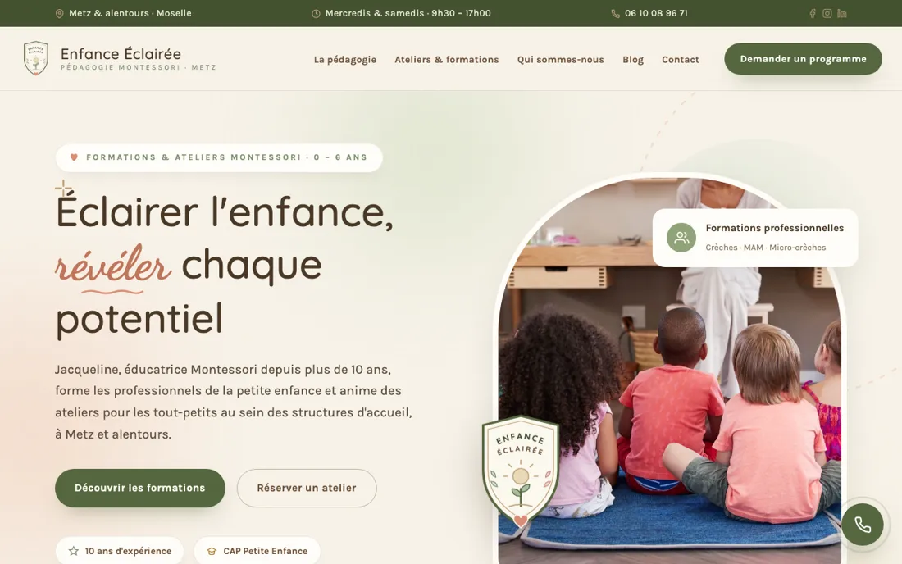
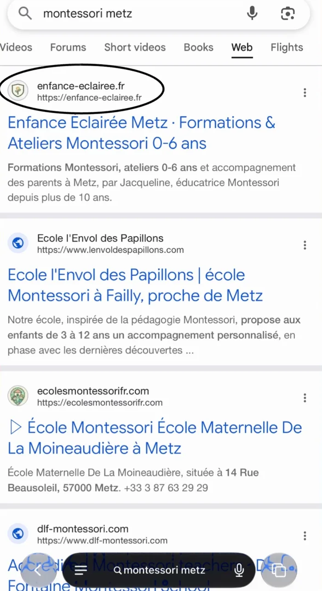

Par Anya Goui
Par Anya GouiC’est la question que nous posent presque tous nos clients au moment de la mise en ligne. La réponse honnête : cela dépend de votre concurrence et de la qualité de votre site. Mais il existe des étapes assez prévisibles, et un exemple concret vaut mieux qu’une promesse.
1La réponse courte
Pour une recherche locale et précise, on observe souvent les premiers résultats en quelques semaines. Pour une recherche très concurrentielle, cela peut prendre plusieurs mois. Personne ne peut garantir une position, mais on peut mettre toutes les chances de votre côté.
2Semaine 1 : l’indexation
Google découvre le site, explore ses pages et les ajoute à son index. Déclarer le site dans la Search Console et fournir un plan du site accélère nettement cette étape.
3Semaines 2 à 6 : les premiers signaux
Google teste vos pages sur différentes recherches et observe le comportement des visiteurs. C’est la période où un site rapide, clair et bien écrit fait la différence.
4Ce qui accélère
- Une recherche précise (métier + ville) plutôt que générale
- Une fiche Google complète qui renvoie vers le site
- Des textes qui répondent aux vraies questions des clients
- Un site léger et rapide sur téléphone
5Ce qui ralentit
- Des photos trop lourdes
- Des pages presque vides
- Un site jamais déclaré à Google
- Changer d’adresse web en cours de route
Audit réel : de zéro site à la première page en 27 jours
Jacqueline forme les familles et les professionnels à la pédagogie Montessori à Metz. Elle nous a autorisés à partager son exemple.
Enfance Éclairée · école Montessori à Metz
Jacqueline n’avait pas de site · résultat vérifié sur Google
✕Ce qui n’allait pas
- Aucun site internet
- Introuvable sur « montessori metz »
- Une offre riche (formations, ateliers, accompagnement) difficile à expliquer de vive voix
✓Ce qui était bien
- Une vraie expertise, plus de 10 ans d’expérience
- De belles photos d’ateliers
- Un bouche-à-oreille déjà actif
→Ce qu’on a changé
- Un titre Google clair : métier, ville, public
- Une description qui donne envie de cliquer
- Des textes écrits avec les mots des familles
- Un site léger et rapide sur téléphone
- Mise en ligne et adresse web gérées pour elle


Recevez un audit de votre site, ou la maquette de votre futur site sous 24h.